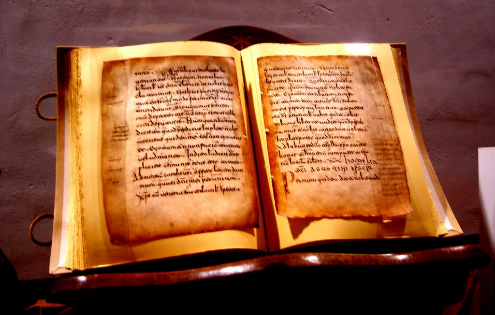
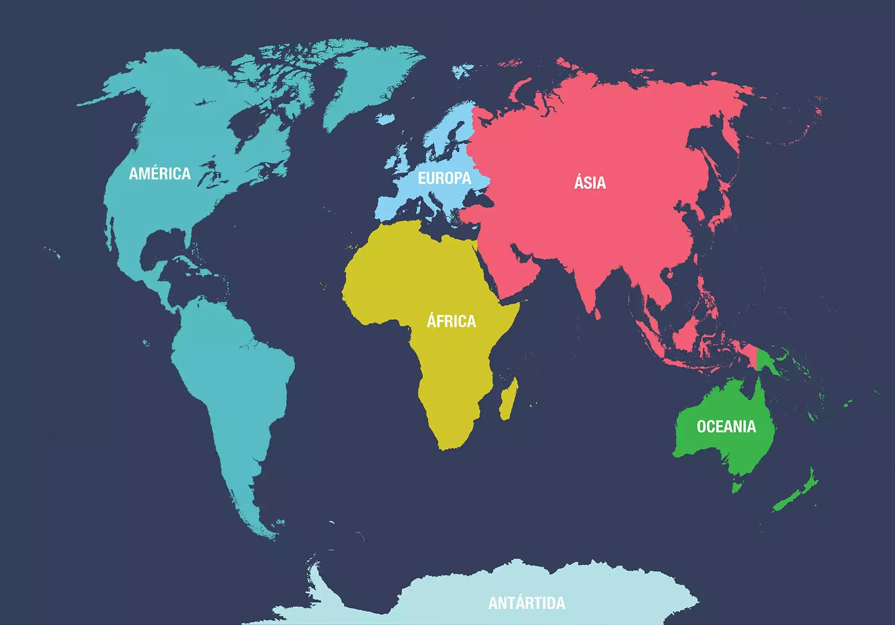
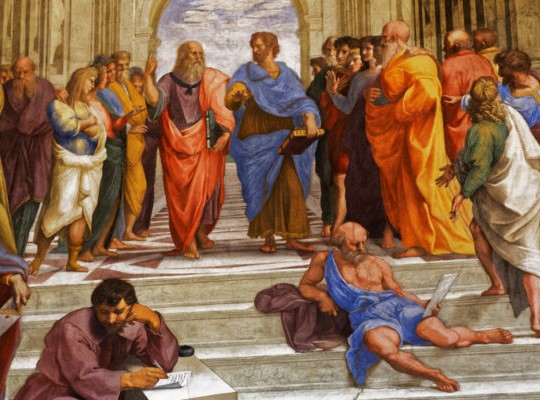
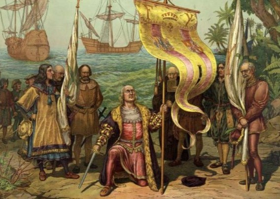
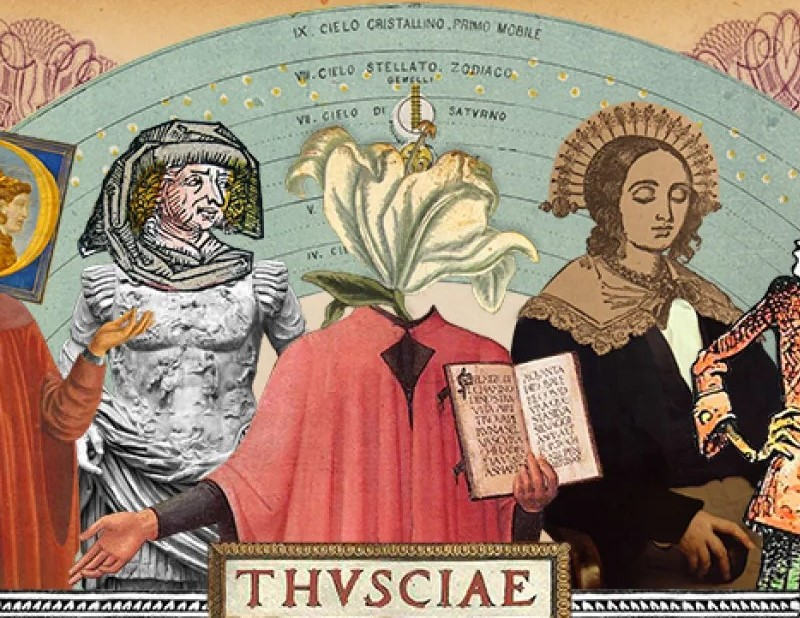
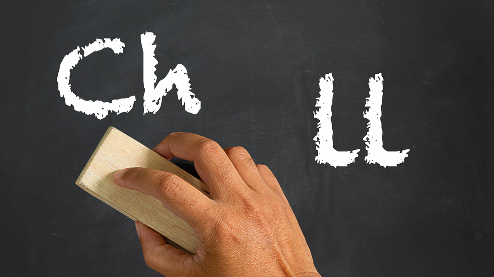

En este apartado vas a encontrar diferentes datos interesantes y
llamativos sobre la lengua española

San Pastor en La Rozuela (León), fue el autor del primer texto
escrito en español
En los años 974-978 (aún se discute sobre la fecha exacta), un
monje del Monasterio de San Justo y San Pastor en La Rozuela
(León), fue el autor del primer texto escrito en español. La
curiosidad del texto es que no se trataba del escribano del
Monasterio, que contase la vida de los monjes, sino que hizo «una
lista de gastos de la cocina», por decirlo de alguna forma
resumida. El texto fue denominado Nodicia de Kesos, y es que ahí
enumeraba, cómo se habían ido gastando los quesos de aquel
monasterio.

El español se habla en los cinco continentes
Contrario a lo que muchos puedan pensar, el idioma español se
habla en todos los continentes, no solo en América y Europa. Por
ejemplo, en África se habla en dos países: Marruecos y Guinea
Ecuatorial. Mientras que en Asia es comúnmente hablado en
Filipinas. Por su parte, en Oceanía se habla español en la Isla de
Pascua.

¿Qué fue el Renacimiento?
El Renacimiento es un fenómeno cultural que retoma los principios
de la antigüedad clásica y los actualiza a través del humanismo.
El humanismo es pues, el movimiento intelectual del Renacimiento
que enlaza la cultura de la época con la antigüedad clásica, es el
aspecto filosófico y cultural del Renacimiento.

Descubrimiento de América
El 12 de octubre de 1492 un grupo de españoles liderados por el
italiano Cristóbal Colón llegó a una isla llamada Guanahaní
después de cruzar el océano Atlántico. Aunque ellos pensaron que
estaban en las Indias (en Asia), en realidad habían descubierto un
nuevo continente: América.

Historia del Español
El español es una lengua romance, derivada del latín vulgar, que
pertenece a la subfamilia itálica dentro del conjunto indoeuropeo.
Es la principal lengua en España y 19 países americanos, y es
oficial también en Guinea Ecuatorial. Es también llamada
castellano por tener su origen en el reino medieval de Castilla.

Las letras "ch" y "ll" no existen
Tras el Congreso de la Asociación de Academias de la Lengua
Española en 1994, las letras "ch" y "ll" fueron
eliminadas del alfabeto. Actualmente, son consideradas dígrafos;
es decir, grupos de dos letras que representan un único fonema.
Ahora bien, la eliminación de estos dígrafos del abecedario no
supone, en ningún caso, que desaparezcan del sistema gráfico del
español.